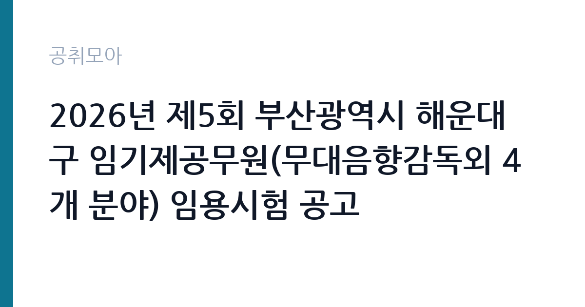

[지자체] 2026년 제5회 부산광역시 해운대구 임기제공무원(무대음향감독외 4개 분야) 임용시험 공고
부산광역시 해운대구 · 부산 · 마감 2026-11-09 (D-11) · 출처 나라일터

한눈에 보는 모집 조건
| 기관 | 부산광역시 해운대구 |
|---|---|
| 공고명 | 2026년 제5회 부산광역시 해운대구 임기제공무원(무대음향감독외 4개 분야) 임용시험 공고 |
| 고용형태 | 임기제 |
| 근무지 | 부산 |
| 게시일 | 2026-10-30 |
| 마감일 | 2026-11-09 (D-11) |
지원자격, 이렇게 읽으세요
- 지방방송통신서기(일반임기제) 1명 지방공업서기(일반임기제) 1명 지방시간
- 접수 ~2026-11-09 마감
- 세부 조건은 원문 공고문 확인
임기제공무원은 공무원 신분이지만 임용 기간이 정해져 있습니다. 전문성이 필요한 업무에 채용되며 임용 기간과 연봉등급이 공고문에 명시됩니다. 임기 중에는 공무원으로서의 복무 규정과 이해충돌 방지 의무가 적용됩니다. 이번 공고는 부산광역시 해운대구에서 직접 진행하는 자체 전형으로, 응시자격과 제출서류는 공고문에 항목별로 제시됩니다. 묶음 모집 공고는 분야별 요건이 서로 다르므로 한 분야의 요건을 다른 분야에 적용하면 안 됩니다. 학위·자격증·경력 요건이 분야마다 다르게 붙고, 직급도 5급 상당부터 9급 상당까지 섞여 있는 경우가 흔합니다. 시간선택제 분야는 주당 근무 시간이 따로 정해져 보수도 비례해 달라집니다. 공고문의 모집분야 표에서 본인 분야의 행만 확인하고, 우대 사항과 제출서류도 그 분야 기준으로 준비하십시오. 서류는 접수 마감 이후 보완이 되지 않으므로 자격 요건과 증빙 서류를 마감 전에 모두 갖춰야 합니다. 공고문에 명시된 우대 사항은 해당 여부를 확인해 증빙을 첨부해야 가점이 반영됩니다. 자격증은 유효 기간과 등록 상태를 확인해야 합니다. 갱신이 필요한 자격이라면 갱신 여부를 먼저 점검하십시오.
이 공고의 포인트
이 공고의 첫 번째 포인트는 분야가 나뉘어 있다는 점입니다. 같은 공고라도 지원하는 분야에 따라 직급·자격요건·근무기간이 모두 달라지므로, 공고문의 모집분야 표에서 본인 분야 행을 먼저 확정해야 합니다. 두 번째는 고용 형태입니다. 임용 기간이 정해져 있지만 공무원 신분으로 복무 규정이 적용되고, 전문성이 인정되면 재임용이나 유사 직위 지원에 도움이 됩니다. 세 번째는 근무지입니다. 부산 지역 근무로, 분야에 따라 전국 단위 근무가 가능한 경우도 있으니 공고문의 근무예정지를 분야별로 확인하십시오. 묶음 공고는 분야별 경쟁률 차이가 커서, 지원자가 적은 분야를 고르는 것도 전략이 됩니다.
전형은 어떻게 진행되나
채용 절차는 공고문에 안내된 순서대로 진행되며, 서류 접수 마감 후에는 추가 접수나 서류 보완이 이뤄지지 않는 것이 원칙입니다. 서류심사에서는 응시자격과 제출서류의 형식 요건을 기계적으로 확인하므로, 경력 증명서의 기간과 직무 내용이 공고의 요건과 정확히 맞아야 합니다. 면접은 지원자 수에 따라 집단면접과 개별면접으로 나뉘고, 직무 관련 질문과 상황 대응 질문이 함께 나옵니다. 합격자 발표는 개별 통보 또는 홈페이지 게시로 이뤄지며 이후 임용 절차가 진행됩니다. 온라인 접수는 마감 시각이 분 단위로 정해지므로 시스템 시간을 기준으로 판단해야 합니다.
원문에서 확인한 전형 방식
부산광역시해운대구인사위원회 공고 제2026-19호 - 2026년 제5회 부산광역시 해운대구 임기제공무원(무대음향감독외 4개 분야) 임용시험 공고 - ○ 임용분야 및 인원 - 무대음향감독 1명[지방방송통신서기(일반임기제)] - 공조냉동기계담당 1명[지방공업서기(일반임기제)] - 체육지도자 3명[지방시간선택제임기제 마급(주35시간)] - 영양사 2명[지방시간선택제임기제 마급(주35시간)] - 간호사 1명[지방시간선택제임기제 마급(주35시간)] ○ 임용기간 - 무대음향감독(2년), 공조냉동기계담당(2년) - 체육지도자(1년), 영양사(1년), 간호사(1년) ○ 선발방법: (1차)서류전형, (2차)면접시험 ○ 연 락 처 - 응시관련: 해운대구청 총무과(☎051-749-4107) - 직무관련: 해운대문화회관 공연기획팀(☎051-749-7652) 해운대보건소 건강증진과 건강증진팀(☎051-749-7582) 2026. 10. 30. 부산광역시해운대구인사위원회위원장 붙임 1. 2026년 제5회 해운대구 임기제공무원(무대음향감독외 4개분야) 임용시험 공고 2부. 2. [붙임1]직무기술서 1부. 3. [붙임2]응시자 제출서류 서식 1부. 끝.
이런 분께 추천해요
- 공고 모집분야 중 하나의 요건을 충족하는 분
- 분야별 근무기간·근무시간 차이를 확인한 분
- 배치 분야를 수용할 수 있는 분
지원 전 체크리스트
- 응시자격 요건과 경력 기준을 충족하는가 — 경력은 증명서로 입증해야 합니다
- 임용 기간과 연봉등급, 근무 시간 조건을 확인했는가
- 제출서류 목록을 모두 준비했는가 — 누락 시 서류 단계에서 탈락합니다
- 접수 마감 2026-11-09 이전에 접수 방식을 확인해 제출했는가
모집 일정과 제출 타이밍
공고 게시일은 2026-10-30, 접수 마감은 2026-11-09입니다. 준비 기간은 약 10일로 서류 준비와 자격 증빙을 함께 처리하기에는 넉넉하지 않은 편입니다. 첫 이틀 안에 공고문과 첨부 서식을 내려받아 요건을 확인하고 남은 기간에 증빙 서류를 발급받는 일정이 현실적입니다. 면접은 서류 합격자 발표 후 짧은 간격으로 진행되는 경우가 많으므로 서류 제출과 동시에 면접 준비를 시작하는 편이 안전합니다. 마감일에는 접수 시스템이 몰리므로 하루 전까지 제출을 마치는 것이 좋습니다. 접수 첫날에 몰리면 시스템 접속이 지연될 수 있으므로 오전 시간대 제출이 안전합니다. 부산 근무지는 지역 안에서도 이동 시간이 길어 근무지 위치를 구체적으로 확인하는 것이 좋습니다. 마감까지 2주 안팎이 있어 준비할 시간은 있지만 미루면 촉박해집니다. 선발 인원이 한두 명 수준이라 지원자 개개인의 서류 완성도가 그대로 평가에 반영됩니다.
직무 이해하기: 지자체
지방자치단체는 지역 행정과 복지, 시설 운영을 담당합니다. 부서별로 사업을 수행하고 결원이나 신규 사업에 따라 임기제와 기간제 인력을 채용합니다. 조례와 자체 인사 규정에 따라 채용 절차가 진행됩니다. 이 공고는 한 장의 공고문에 여러 모집분야를 함께 담은 형태입니다. 분야마다 담당 업무가 완전히 달라서, 같은 공고에 지원해도 배치되는 부서와 하는 일이 전혀 다를 수 있습니다. 공고문에는 보통 분야별 인원·직급·자격요건이 표로 정리되어 있고, 원서접수도 분야를 골라야 진행됩니다. 따라서 먼저 본인이 지원할 분야를 하나로 정하고, 그 분야의 자격요건과 근무기간만 따로 읽는 방식이 안전합니다. 여러 분야를 동시에 지원할 수 있는지는 공고문의 중복지원 제한 조항으로 확인해야 합니다. 업무는 혼자 처리하기보다 부서 단위로 나눠 진행되므로 담당 구역과 협업 범위를 입사 초에 확인하는 것이 중요합니다. 업무 강도와 근무 시간대는 부서 배치에 따라 달라지므로 면접에서 확인하는 것이 가장 정확합니다.
자기소개서 작성 팁
지원서 첫 문단에서 지원 분야를 명확히 밝히는 것이 가장 중요합니다. 묶음 공고는 같은 기관에 여러 지원자가 몰리므로, 어떤 분야에 왜 지원했는지가 드러나지 않으면 준비도가 낮게 평가됩니다. 그 분야의 실무 경험과 자격을 앞세우고, 다른 분야의 경험을 섞어 나열하지 마십시오. 문항별 글자 수 제한을 먼저 확인하고, 각 문항의 첫 문장에 결론을 배치하는 방식이 읽기 쉽습니다. 지원 동기는 기관의 어떤 사업에 기여하겠다는 한 문장으로 시작하고, 이어서 본인의 경험을 근거로 붙이십시오. 감점을 피하려면 다른 기관에 보낼 수 있는 범용 문장을 그대로 쓰지 않는 것이 중요합니다. 기관 이름과 사업명이 문장 안에 자연스럽게 들어가야 준비도가 드러납니다.
면접 준비 포인트
면접은 지원한 분야의 직무를 기준으로 진행됩니다. 왜 여러 분야 중 그 분야를 골랐는지, 그 분야의 실무를 어느 정도 이해하는지 묻습니다. 다른 분야로 배치될 수 있다는 질문이 나오면 솔직하게 답하고, 본인 경험과 맞는 분야를 근거와 함께 설명하십시오. 답변은 상황, 판단, 조치의 순서로 정리하면 전달이 분명해집니다. 모르는 질문에는 모른다고 밝히고 확인 방법을 제시하는 편이 억지 답변보다 낫습니다. 마지막에는 근무 의사와 함께 2026-11-09 이후 일정에 언제든 응할 수 있다는 점을 전달하십시오. 답변 시간이 짧게 정해져 있는 경우가 있으므로 핵심 문장을 먼저 말하고 근거를 붙이는 방식이 유리합니다.
급여·근무조건 읽는 법
부산광역시 해운대구의 구체적인 보수 수치는 이 공고 원문의 처우 항목과 보수표에서 확인해야 합니다. 공시 자료로 확인되지 않은 금액은 이 글에서 추정해 제시하지 않습니다. 알리오 2025년 결산 공시 기준 공공기관 전체 일반정규직 1인당 평균보수는 7,376만 9천원, 신입사원 평균초임은 4,031만 6천원입니다(무기계약직 미포함). 임기제공무원의 보수는 지방공무원 또는 국가공무원 보수규정상 연봉등급제를 적용받습니다. 연봉은 등급별 범위에서 경력과 직무 난이도를 반영해 결정되고, 개방형 직위는 별도 기준이 적용되기도 합니다. 시간선택제는 주당 근무 시간에 비례해 연봉이 산정됩니다. 구체적인 등급과 금액은 공고문에서 확인하십시오. 2026년 적용 최저임금은 시급 10,320원, 월 환산 2,156,880원(주 40시간·209시간 기준)입니다. 고용노동부 고시 제2025-47호로 확정된 금액입니다. 공고문에 금액이 제시되지 않은 항목은 원문 보수표나 처우 설명에서 확인해야 하며 확인되지 않은 수치는 쓰지 않는 것이 원칙입니다. 비교할 때는 월 급여뿐 아니라 상여·명절휴가비·복지포인트·초과근무수당까지 포함한 연간 총액으로 계산하십시오. 기간제라면 계약 기간 동안의 총액을, 무기계약이라면 호봉 상승과 정년까지의 누적 소득을 기준으로 판단하는 편이 정확합니다.
자주 묻는 질문
- 선발 인원은 몇 명인가요?
공고문 기준 1명입니다. 직종별로 인원이 나뉘는 경우가 있으니 모집분야 항목을 함께 확인하십시오. - 근무지는 어디인가요?
부산 지역의 부산광역시 해운대구 소속 근무지입니다. 세부 주소와 출퇴근 조건은 원문 공고문에서 확인할 수 있습니다. - 보수는 얼마인가요?
채용 신분(임기제공무원)과 기관 임금 규정에 따라 정해지며 구체적인 금액은 공고문 처우 항목에 제시됩니다. 금액이 공개되지 않은 경우에는 원문의 보수표를 확인하십시오.
함께 보면 좋은 공고
[지자체] 2026년 제4·6·7회(재공고) 용인시 지방임기제공무원 채용시험 시행계획 공고 — 마감 2026-11-11[지자체] 2026년 제10회 용인시 지방임기제공무원 채용시험 시행계획 공고 — 마감 2026-11-11[지자체] 보령시 직장운동경기부(유도팀) 지도자(감독) 공개 채용 공고(재공고) — 마감 2026-11-02출처: 나라일터 공개정보를 바탕으로 공취모아가 정리한 안내글입니다. 모집 조건·일정은 변경될 수 있으니 지원 전 반드시 원문 공고문을 확인하세요. 본 글은 정보 제공용이며 합격을 보장하지 않습니다.